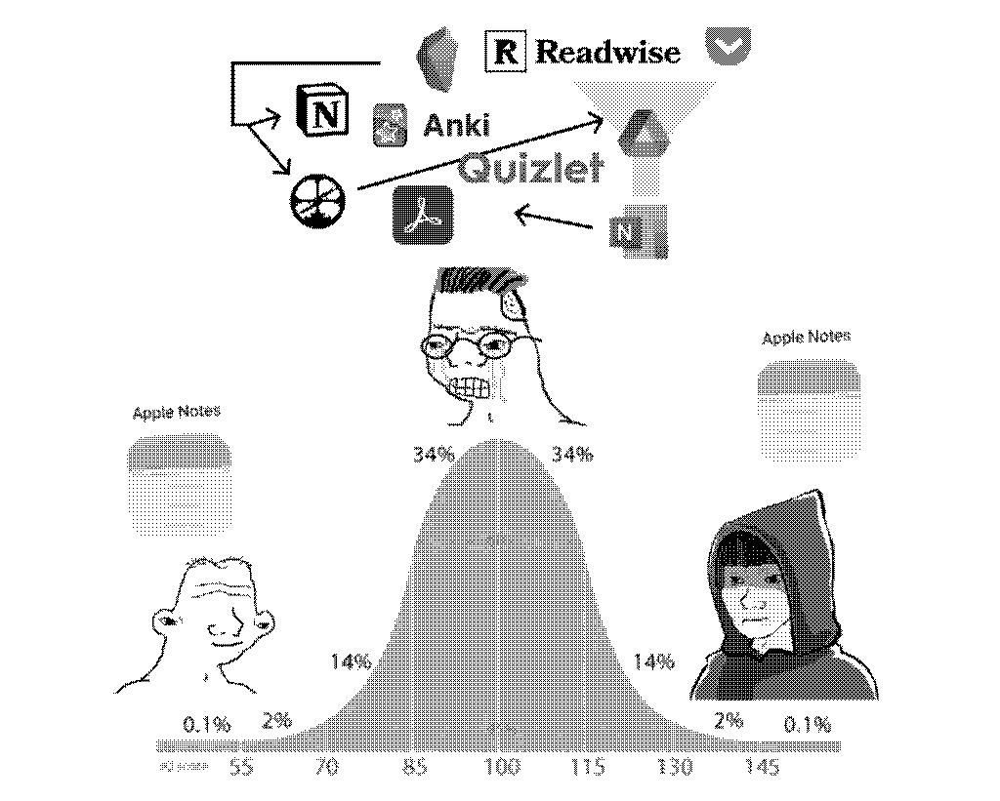

Write An Intent Statement For Your Knowledge Infrastructure
2023-08-01

Nerds (like me) love trying out new tools. At least in the circles I follow, there's been this new Renaissance of information management and sharing. Using personal knowledge management (PKM) software is gradually becoming more common among knowledge workers, a good few people are starting digital gardens, and there seems to be more and more tools billing themselves as a new way to write or think.
However, this can quickly become a trap. I found myself in this situation with a tool I've been recently trying called Anytype. For those who are unfamiliar, Anytype is a pretty new contender in the PKM space, and it's got a lot going from it, from open-sourced code, to encrypted sync, and a pretty nice UI to boot. However, it's main draw is the type system. As the name suggests, users can make any type, with it's own attributes and templates, and structure information in whatever way makes sense in their head. And by god, it's addictive. It's a really powerful feeling being able to structure information in the exact intuitive manner that makes sense to you.
But all of this ended up backfiring on me a little bit.** I was so caught up in the fact that I could map out a lot of my mind in this tool that I didn't stop and ask myself whether I should.** I've been helping my partner build up her own knowledge infrastructure recently, and after explaining the virtues of organization and intent to her I went to add some notes into Anytype and I realized that I had a bit of a mess on my hands. My knowledge infrastructure was a total mess, littered with types I came up with on a whim, and a ton of essentially boilerplate information. I don't need an entire object for a youtuber just because they publish a single course that I plan on taking one day. That information isn't actionable or meaningful for me in any way, and not every piece of knowledge needs every attribute represented in my personal knowledgebase.
Ultimately, I realized that I was missing intent. I was creating notes and trying to offload knowledge, but I didn't have an end goal, a specific idea of what I wanted out of my private knowledgebase. This has been further complicated by the fact that I'm slowly building up a public knowledgebase, and not having a clear intent means that it's hard to navigate what should be private and what should be public.
The simple solution for this problem is an intent statement, a document that outlines the intent of a given system. I've already been doing this in smaller ways, for example whenever I spin up an OS on one of my computers, and enter that information into my notes, I write a small intent statement indicating what the machine is for (Is it my primary machine for some time? Does it have a specific purpose that it's set up for? Am I just spinning it up to try out a particular piece of software?). Having my intentions thought through, written out, and in a place where I'm reminded of it results in a more organized way of thinking about my systems. **Having an intent statement grounds me into thinking about what I need to do with the system to meet my goals for it, rather than what I could do with the system. **
My intent statement for my Anytype knowledgebase ended up being structured like this:
Intent
Broadly speaking, my Anytype knowledgebase is going to focus on working documents, contrasting with my public knowledgebase that serves to hold more crystallized notes and knowledge, notes that are more divorced from their immediate context in my life. For example, the public knowledgebase would have the information on how to install Tailscale on Fedora Silverblue, while the private knowledgebase would tell me whether I've installed Tailscale on a given Silverblue installation using those instructions.
Use Cases
System Documents
Notes on hardware and software will likely be moved into my public knowledgebase, but the details of how my systems are set up will be in my private knowledgebase, for operational security reasons and because they're rapidly changing working documents.
Implementation
The "Computing Hardware" type and set.
Drafting Box
A private place for me to synthesize knowledge together into thought-out writing, like the posts on this very site.
Implementation
The "Drafting Box Draft" type and set.
Project, Course, and Book Tracking
A place for me to keep track of my progress on courses I'm taking, projects I'm working on, and books I'm reading. Essentially state management for these categories.
Implementation
The Project, Book, and Online Course types and sets.
Idea Formation and Iteration
A private place for me to outline and form ideas for projects, as well as iterate slowly on them until I decide to implement them
Implementation
The Idea type and set.
Miscellaneous Notes
A place for me to put minor personal notes that don't really warrant a dedicated area, like grocery lists or what my brother wants from Chipotle. Essentially a replacement for Apple Notes on my phone.
Implementation
The Note type and set
I plan on adding intent statements to all of my public and private knowledge systems, as part of a broader initiative for all of my information systems to have "batteries included". For example, you can now read the intent statement for this site here.